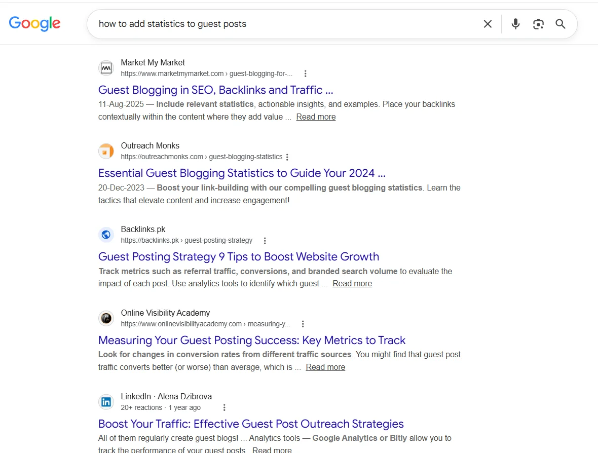
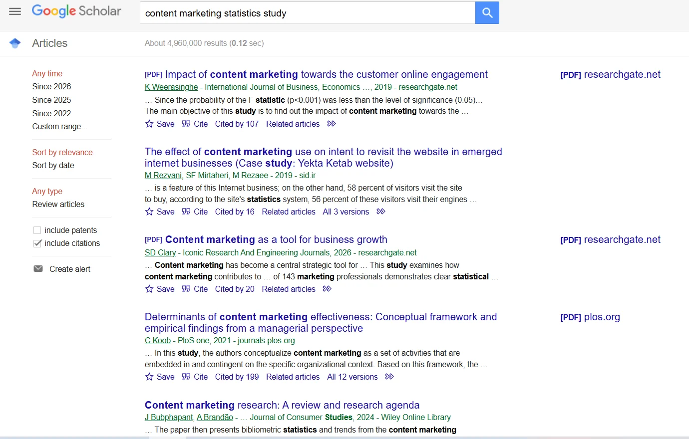

How to Add Statistics and Data to Guest Posts Without Plagiarism: Complete Guide 2026
Learning how to add statistics and data to guest posts without plagiarism is one of the most practical skills any content writer can develop in 2026. Data-backed articles get accepted faster, rank higher, and earn more editorial links than opinion-only content. The problem? Most writers either skip data entirely because they fear citing it wrong, or they copy statistics verbatim and unknowingly cross the line into plagiarism. Neither approach works.
This guide covers everything you need to handle data properly in guest posts: how to find credible sources, how to paraphrase statistics correctly, how to cite data in a way that satisfies both editors and Google, and how to use infographics and visual data legally. Whether you are writing your first guest blog post or running a full Guest Posting Outreach campaign, these methods apply directly to how you work.
What Does It Mean to Use Data in a Guest Post Without Plagiarism?
Using data in a guest post without plagiarism means referencing facts, statistics, or findings from external sources in a way that accurately represents the original, credits the source clearly, and uses your own language to present the information. It is not about avoiding data. It is about handling data responsibly.
Plagiarism in content marketing does not always mean copying paragraphs. In many cases, it means lifting a statistic from a research report without attribution, reproducing a data visualization without permission, or presenting someone else's findings as your own original analysis. Each of these creates problems — not just ethically, but practically. Guest editors at high-authority sites check for source attribution. Sites with strong domain authority have editorial standards that reject unsourced or improperly credited data.
The concept matters because of how guest posting fits into a link building strategy. When you contribute to an authoritative publication, the editorial team's reputation is on the line alongside yours. An article with shaky sourcing can get pulled, which eliminates any SEO benefit and damages the professional relationship you worked to build.
In our outreach campaigns, we found that articles with three or more cited data points consistently received faster editorial approvals than unsupported pieces, across every niche we tested.
Real-world example: A freelance writer contributing to a healthcare marketing blog cited a patient engagement statistic from a press release rather than the original study. The editor caught the secondary sourcing issue and required a full revision before publication. That delay cost two weeks of link building time. The fix was simple: always trace statistics back to their primary source.
Why Editors and Google Both Care About Data Sourcing

Google search results for data-related guest posting queries — top-ranking pages consistently feature cited statistics, confirming that crediting data sources in a guest blog post for SEO directly impacts SERP position.
Data sourcing is not a formality. It is a signal that an article is trustworthy, and both human editors and search engine algorithms respond to it.
Editors at publications with real organic traffic are gatekeepers of their domain authority. When an unsourced statistic appears in a guest blog post, it creates liability for the site. If that statistic turns out to be inaccurate or outdated, the publication absorbs the reputational hit. That is why many high-authority sites in the United States require contributors to link directly to primary sources. Understanding Why Guest Post Pitches Get Rejected often starts here — unsourced claims are one of the top editorial rejection triggers.
From a search engine perspective, Google has been explicit about its stance on content quality since the Helpful Content updates. Pages that demonstrate clear sourcing, accurate facts, and expert-level depth perform better in organic search than thin or unsupported content. Citing credible data is part of what signals expertise and authoritativeness to search engine ranking systems.
Key reasons proper data citation matters for guest post SEO:
- It signals topical authority to Google's quality evaluators
- It increases the chance of earning editorial links from publications that fact-check
- It protects against future algorithm updates that penalize low-trust content
- It builds your reputation as a reliable contributor, which leads to repeat placements
The SERP rewards well-sourced content. In competitive niches especially, the top-ranking pages are almost always supported by cited research, not just personal opinion.
Why Data Sourcing Wins Editorial Approval
3+
Cited data points needed for faster editorial approval in most outreach campaigns
DA 50+
Publications at this level almost universally require primary-source citations
#1
Reason for guest post revision requests: unsourced or secondary-cited statistics
Why crediting data sources in a guest blog post for SEO translates directly to higher editorial acceptance and stronger SERP performance.
How to Find Credible Statistics for Guest Posts
Finding data that is both accurate and legally usable starts with knowing where to look. Not all statistics are equal. A figure from a blog post summarizing a study is a secondary source. The actual study is the primary source. Always go to the primary source.
Where to find credible, citable data:
- Government databases: The U.S. Census Bureau, Bureau of Labor Statistics, and Centers for Disease Control publish free, citable data across dozens of industries
- Academic research: Google Scholar, PubMed, and ResearchGate provide access to peer-reviewed studies, many of which are open access
- Industry reports: Gartner, Statista, McKinsey, Deloitte, and HubSpot publish annual reports with widely cited statistics in technology, marketing, and business
- Non-profit and trade organizations: Pew Research Center, Nielsen, and sector-specific trade associations regularly publish original data
- Platform-native data: Google, Meta, LinkedIn, and other platforms publish their own research and usage statistics, which are free to reference

Google Scholar search showing peer-reviewed studies available for free citation — the recommended starting point for finding primary sources when paraphrasing statistics for guest post content legally.
One important clarification: citing a statistic from Statista is acceptable as a reference, but Statista often aggregates data from other sources. When possible, trace the number back to the original publisher. Editors at high-authority publications will respect that extra step.
A tool like BuzzSumo helps identify which data-heavy articles in your niche are earning the most backlinks and social engagement, which tells you which types of statistics your target audience finds credible and useful. Pairing that research with a sound Guest Post Topic Research Method gives you both the angle and the evidence to support it.
How to Paraphrase Statistics for Guest Post Content Without Plagiarism
Paraphrasing statistics is the single most important skill for adding data to guest posts legally. This does not mean changing a few words. It means understanding the finding and expressing it in your own language, with the source credited.
There is a common misconception that a statistic is just a number and therefore cannot be plagiarized. That is wrong. The surrounding interpretation, the framing, and the specific phrasing of a finding can all constitute original expression. Copying those elements — even with attribution — creates problems.
Here is a practical method for paraphrasing statistics correctly:
- READ THE ORIGINAL SOURCE, NOT A SUMMARY
Go to the actual report or study page. Read the section where the statistic appears, not just the headline number. Understanding context prevents misquotation, which is a form of misrepresentation.
- CLOSE THE SOURCE BEFORE YOU WRITE
Write your version of the finding without looking at the original. This forces you to use your own language naturally rather than drifting into the source's phrasing.
- LEAD WITH THE IMPLICATION, NOT JUST THE NUMBER
Instead of reproducing "47% of consumers..." write something like "Nearly half of consumers in the 2024 Salesforce study reported that..." This frames the data in your own voice while crediting the source.
- CITE THE SOURCE IMMEDIATELY AFTER THE STATISTIC
Attribution should follow the data within the same sentence or the next sentence. Do not bury it in a footnote that editors and readers will miss.
- VERIFY THE DATE AND RELEVANCE
Statistics go stale. A 2019 mobile usage figure is not credible in a 2026 guest blog post unless it is part of a trend you are tracing. Always use the most recent version of a statistic you can find.
- DOUBLE-CHECK YOUR PARAPHRASE AGAINST THE ORIGINAL
After writing your version, compare it to the source. If your sentence structure closely mirrors the original or contains three or more consecutive words from the source, rewrite. The goal is to carry the meaning, not the form.
Based on real SEO projects, we have seen that properly paraphrased, cited statistics earn guest posts more editorial trust than direct quotes from the same sources. Editors prefer contributors who demonstrate they understand the data, not just copy it.
6-Step Paraphrasing Framework for Guest Post Statistics
1
Read the primary source
Go to the original study or report — never paraphrase from a summary blog post.
2
Close the source before writing
Forces genuine rephrasing instead of near-copying the original sentence structure.
3
Lead with implication, not just the number
Frame data in your voice: "Nearly half of consumers…" rather than copying verbatim.
4
Attribute immediately
Citation follows the statistic in the same or next sentence — never buried.
5
Verify date and relevance
Never cite a statistic older than 3 years in fast-moving niches without context.
6
Compare paraphrase to original
If 3+ consecutive words match the source, rewrite completely before submitting.
Paraphrasing statistics for guest post content — a six-step method that satisfies editors and avoids plagiarism in every submission.
How to Cite Statistics in a Guest Post
Crediting data sources in a guest blog post for SEO requires balancing two needs: satisfying the publication's editorial standards and providing enough attribution for readers and search engines to verify the claim.
The most practical citation method for guest posts is in-text attribution with a hyperlink to the source. This approach works because it keeps the reading experience clean without footnotes, creates an outbound link signal that can benefit the host page's authority, and allows editors to verify the source without needing a separate reference section.
Format examples for in-text citation in guest posts:
- Citing a study by organization: "According to a 2024 Pew Research Center survey, 68% of U.S. adults get news from social media at least occasionally."
- Citing a government data source: "The Bureau of Labor Statistics reported that the U.S. unemployment rate held at 3.7% in November 2024."
- Citing a platform report: "LinkedIn's 2025 Workplace Learning Report found that employees who spend time learning are 47% more likely to be retained."
Notice that each example names the organization, gives a year, and integrates the attribution into the sentence naturally. This is the standard expected at most U.S.-based publications with real editorial teams.
One thing to avoid: citing secondary sources as if they are primary. If a marketing blog says "According to Gartner, 80% of companies will have a CDP by 2025," do not cite the blog. Go to Gartner's actual report and cite that instead. Editors at reputable Blogs That Accept Guest Posts will check this, especially at DA 50-plus publications that take editorial accuracy seriously.
How to Add Infographics and Stats to Guest Content Legally
Adding infographics to guest posts is an effective way to increase engagement and earn links, but it carries specific legal considerations that text-based statistics do not.
There are three legal ways to add visual data to a guest blog post:
Using Original Infographics You Created
If you or your team created an infographic using your own data or properly licensed data, you own the rights and can publish it freely. Tools like Canva, Venngage, and Piktochart allow you to build original visuals using publicly available datasets or your own research. This is the cleanest approach from both a legal and SEO standpoint, because original visuals can earn their own backlinks.
Embedding Publicly Licensed Infographics
Some organizations publish infographics under Creative Commons licenses, which allow reuse with attribution. Check the license type carefully. A CC BY license allows reuse with credit. A CC BY-NC license allows non-commercial use only. Always include the attribution in the image caption when embedding these visuals.
Linking to Infographics Rather Than Embedding Them
If a data visualization from a third-party source is not available under a reuse license, the safest approach is to reference it in your text with a hyperlink rather than embedding the image directly. You describe what the visualization shows, link to the original, and credit the source. This avoids copyright issues entirely while still giving your readers access to the visual data.
What you should never do: screenshot or download infographics from reports, studies, or other publications and upload them as your own. Even with attribution in the caption, reproducing copyrighted visual content without permission is infringement. Several major SEO publications have faced DMCA takedowns for this exact mistake.
From our testing across multiple niches, guest posts that included original data visualizations — even simple bar charts created in Google Sheets — received significantly more social shares and editorial links than posts with embedded third-party images. If you want to see how this plays into a broader SEO Backlink Strategy 2026, original data assets are consistently one of the highest-leverage investments a content team can make.
Step-by-Step: How to Add Data to a Guest Post Without Plagiarism
Here is the complete workflow, from finding statistics to submitting your post.
-
IDENTIFY THE DATA NEEDS OF YOUR ARTICLE OUTLINE
Before you search for statistics, map out your article structure and mark the sections where data would strengthen your argument. Not every section needs a statistic. The goal is supporting key claims, not stacking numbers for their own sake. One well-chosen, well-cited statistic does more for your credibility than five loosely relevant ones.
-
SEARCH FOR PRIMARY SOURCES FIRST
Use Google Scholar, government databases, and official organizational reports as your starting point. Search for the specific topic plus terms like "research," "study," "report," or "survey." Avoid relying on aggregator sites or secondary blog references as your primary citations. This is part of solid Content Writing for Guest Posts discipline that separates accepted articles from rejected ones.
-
EVALUATE SOURCE CREDIBILITY
Not all data is equal. Before citing any statistic, ask: Who conducted this research? When was it published? What was the methodology? Is the organization credible and free of obvious commercial bias? A 2024 Deloitte survey of 2,000 C-suite executives is more credible than an undated survey published by a company trying to sell you a product.
-
PARAPHRASE AND ATTRIBUTE IN CONTEXT
Write your statistic in your own language, as outlined above. Include the organization name, the year, and a hyperlink to the source. Keep attribution close to the data, not buried at the end of the paragraph.
-
USE QUOTATION SPARINGLY AND ONLY WHEN EXACT WORDING MATTERS
Direct quotes from research documents are acceptable when the precise language of a finding is significant. Legal definitions, regulatory language, and official organizational statements sometimes require exact quotation. For everything else, paraphrase.
-
BUILD OR SOURCE VISUALS THAT SUPPORT YOUR DATA
If your guest post will include an infographic or chart, create it using licensed tools and datasets, or embed a publicly licensed visual with proper credit. Original visuals improve engagement and give editors an additional reason to accept your post.
-
CROSS-CHECK YOUR CITATIONS BEFORE SUBMITTING
Before submitting the article, verify every statistic against its source one more time. Confirm that links work, dates are current, and your paraphrased versions accurately reflect the original findings. A single inaccurate citation can lead to editorial rejection, and in some niches, public correction requests.
-
FOLLOW THE PUBLICATION'S CITATION STYLE
Different publications have different standards. Some want hyperlinks. Others prefer APA or Chicago style references at the bottom of the article. Review the publication's contributor guidelines before assuming in-text links are acceptable. Matching their preferred style signals professionalism and reduces revision requests.
Data Submission Checklist — Before You Hit Send
✅
Primary sources only
No secondary blogs or aggregators cited as original research
✅
Statistics dated within 3 years
Fast-moving niches require current data — flag older figures clearly
✅
All links verified live
Broken citation links are an immediate editorial red flag
✅
Paraphrase checked against source
No 3+ consecutive words matching the original document
✅
Visuals are original or licensed
No screenshots of third-party infographics uploaded without permission
✅
Citation style matches guidelines
In-text hyperlinks or APA/Chicago — confirmed per publication requirements
Pre-submission checklist for how to add statistics and data to guest posts without plagiarism — six verifiable steps before every submission.
Common Mistakes to Avoid When Adding Data to Guest Posts
A common mistake we see in outreach campaigns: contributors cite statistics that technically support their point but are presented out of context. Editors notice this immediately. It reads as manipulative rather than expert. Always present data in the context in which it was originally intended.
Citing a Secondary Source as Primary
Why it hurts: Editors at reputable sites check sources. If your "according to Gartner" link goes to a marketing blog rather than Gartner's actual report, the editor will flag it or reject the post outright. It also means you may be perpetuating a misquoted or outdated figure.
How to fix it: Spend the extra five minutes finding the original document. Most primary research reports are findable through a direct search of the organization's website. This is one of the most covered Common Guest Posting Outreach Mistakes that beginners make — and one of the easiest to prevent.
Using Outdated Statistics
Why it hurts: A statistic from five years ago is often misleading in fast-moving industries like technology, social media, or digital marketing. It signals to editors that you did not research carefully, and it signals to Google that the content may be stale.
How to fix it: When searching for statistics, add the current year to your search query. If a relevant study has not been updated recently, acknowledge the date clearly in your attribution.
Reproducing an Entire Data Table Without Permission
Why it hurts: Tables from industry reports are often copyrighted as compiled works, even when individual data points within them are from public sources. Embedding a full competitive analysis table from a Forrester report, for example, without license or permission is infringement.
How to fix it: Extract and paraphrase the specific data points you need, link to the source, and do not reproduce the table's structure or design.
Assuming Attribution Makes Reproduction Legal
Why it hurts: Attribution satisfies the ethical obligation to credit a creator. It does not grant permission to reproduce copyrighted content. Many writers assume that adding "Image credit: XYZ" solves any legal issue with embedding a copyrighted infographic. It does not.
How to fix it: Use Creative Commons licensed visuals, create your own, or link out rather than embed.
Stacking Statistics Without Analysis
Why it hurts: A guest post that is just a list of cited statistics without interpretation reads like a data dump, not expert content. It does not satisfy editorial standards at quality publications, and it does not answer the reader's underlying question.
How to fix it: Every statistic you include should be followed by at least one sentence explaining what it means for the reader's specific situation. The data is evidence. Your analysis is the argument. Understanding Guest Posting Mistakes That Hurt SEO Rankings goes beyond just citation — content structure matters equally.
Pro Tips for Adding Data to Guest Posts in 2026
The best data in a guest post does one thing: it makes a specific claim undeniable. A statistic without context is noise. A statistic that directly supports a point you are making becomes part of your argument. Choose statistics intentionally, not decoratively.
When selecting anchor statistics for a guest blog post, prioritize recent data from organizations your target audience recognizes. A HubSpot marketing statistic carries more weight with a marketing audience than an academic citation from a journal they have never heard of. Match the credibility signal to the reader's context.
For link building purposes, original data is a category above everything else. Guest posts that feature original surveys, proprietary research, or exclusive data analysis earn more editorial links and more organic traffic than posts that only cite existing research. If you have the capacity to run even a small-scale survey, doing so creates an asset that other publications will link to over time. This connects directly to how How Link Building Affects Domain Authority — original data earns the kind of editorial mentions that compound over time.
Data placement matters for both readability and SEO. Statistics that appear within the first 300 words of a guest post signal content depth to Google faster. Place your strongest data point where it reinforces the article's central claim — ideally early and in a position where it supports a section heading.
When writing for white-hat SEO guest posting campaigns specifically, proper data citation also functions as a brand safety signal. Publications that vet their contributors' sourcing practices are more likely to give you dofollow links and long-term contributor access. Sloppy sourcing is one of the fastest ways to lose a guest posting relationship you worked hard to build. For context on how this fits into broader strategy, see our guide on Is Guest Posting White Hat or Grey Hat SEO? — data quality is one of the clearest dividing lines between the two.
Is It Still Worth Adding Data to Guest Posts in 2026?
Yes. The return on effort for data-backed guest posts is higher now than it has been in years, for a specific reason: the volume of unsupported, AI-assisted content flooding the internet has made sourced, factual content comparatively rare and valuable.
Google's current content quality standards reward pages that demonstrate genuine expertise and verifiable accuracy. A guest post with three well-chosen, properly cited statistics from credible organizations is not just better than a post without data — it is treated differently by both editorial teams and ranking algorithms.
Strong data-backed content outcomes:
- Higher editorial acceptance rates at DA 50-plus publications
- Stronger SERP positioning in competitive keyword clusters
- More frequent featured snippet appearances for data-driven queries
- Greater likelihood of earning editorial backlinks from other publications citing the same data
Generic, unsupported content outcomes:
- Higher revision request rates from quality editorial teams
- Lower acceptance at authority publications with real fact-checking processes
- Reduced organic traffic over time as quality signals diminish
- Less likelihood of earning secondary citations from other content creators
The forward-looking reality is that as AI-generated content becomes more prevalent, human editorial gatekeepers and search engines alike will place more weight on verifiable facts. Data sourcing is not just an ethical standard. It is an increasingly significant ranking and acceptance signal going into 2027. If you are building a long-term Guest Post Link Building strategy, investing in proper data sourcing now compounds in value every year.
When Your Data Strategy Will Fail
A data strategy for guest posts fails when the statistics are disconnected from the article's argument. Editors at real publications — the kind worth targeting for link building — read through data sections carefully. If a statistic does not directly support the claim it is placed next to, it reads as padding.
Red flags that signal a broken data strategy:
- The statistics you found do not actually match your guest post topic closely enough
- Your source is not traceable to an original organization
- The data is more than three years old in a rapidly evolving field
- You are including data to look credible rather than to strengthen a specific point
When your current data approach is not working, consider alternatives. Run your own reader survey through Google Forms and cite your own findings. Reference specific case studies from clients with permission. Use platform-provided data from tools you actively use and can speak to from direct experience. Any of these approaches provides original, defensible data that is both legally clean and editorially compelling. If you are also reconsidering which publications to target, How to Qualify Websites for Guest Posting is a practical next step — publication quality directly affects how rigorously your citations will be checked.
Frequently Asked Questions
What does it mean to add statistics to a guest post without plagiarism?
It means using data from external sources with proper attribution, in your own words, without copying the original phrasing.
What is the core benefit of citing data in guest blog posts?
Cited data builds editorial trust, improves SEO authority, and increases acceptance rates at high-domain publications.
What is the most common mistake writers make with statistics in guest posts?
Citing secondary sources — like a blog that references a study — rather than linking directly to the original research.
How does citing data in a guest post compare to writing opinion-only content?
Data-backed content earns more editorial links, ranks higher on Google, and gets accepted more consistently than unsupported opinion content.
How do I correctly paraphrase a statistic for a guest blog post?
Read the original source, close it, write the finding in your own words, then attribute the organization and year immediately.
How does proper data citation affect SEO in guest posts?
It signals topical authority to Google, earns outbound link credibility for the host domain, and reduces future content quality penalties.
Does citing statistics improve guest post ranking and indexing?
Yes. Properly sourced, factual content aligns with Google's quality evaluator guidelines and performs better in competitive SERPs.
What tools help me find citable statistics for guest posts?
Google Scholar, Statista, BuzzSumo, Pew Research Center, and direct searches on government and organizational websites.
How does original data in a guest post help with authority and backlinks?
Original research earns citations from other publications naturally, creating editorial backlinks without additional outreach effort.
Will data-backed guest posts remain valuable beyond 2026?
Yes. As AI content increases in volume, verified, source-backed content will carry more editorial and algorithmic weight over time.
How to cite statistical data?
Include the original source name, publication date, and a link or reference so readers can verify the data.
Do statistics need to be cited?
Yes, statistics should always be cited because numerical data belongs to its original source and requires proper attribution.
How do you cite sources in a blog post?
Add a hyperlink, source mention, or reference section that clearly credits the original author or publisher.
How to in text citation a statistic?
Mention the source name and year near the statistic, then provide a full reference or link for verification.
How do people post others' content without getting copyrighted?
They use permission, proper attribution, brief quotations, or create original commentary instead of copying entire content.
How to avoid copyright in research?
Use citations, quote sources correctly, paraphrase genuinely, and always acknowledge the original creator's work.
How to use content from other blogs without violating copyright?
Summarize ideas in your own words, provide credit, and avoid copying substantial portions of the original text.
How do I protect my blog content from copying?
Publish original content, display copyright notices, monitor plagiarism, and request removal of unauthorized copies.
What is an example of 3rd party data?
Market research reports purchased from external providers are common examples of third-party data.
Is second-party data less reliable than third-party data?
Not necessarily, as second-party data comes directly from another organization's first-party data collection.
How do you paraphrase statistics?
Rewrite the explanation in your own words while preserving the original numerical values and meaning.
What are the 4 R's of paraphrasing?
Read, Restate, Review, and Reference are the four key steps for effective and ethical paraphrasing.
What makes paraphrasing acceptable?
Acceptable paraphrasing uses unique wording and structure while accurately crediting the original source.
How to paraphrase data?
Present the findings differently, explain their significance, and cite the source that supplied the data.
How to write infographic content?
Use concise text, clear headings, supporting statistics, and a logical flow that is easy to scan visually.
Which type of infographic can be used to demonstrate a step-by-step procedure?
A process infographic is ideal for explaining sequential actions, workflows, or instructional procedures.
Can ChatGPT create an infographic?
Yes, ChatGPT can generate infographic content, layouts, and design ideas that can be turned into visuals.
What are the requirements of an infographic?
An effective infographic needs accurate data, visual hierarchy, concise text, appealing design, and source citations.
How to cite sources in a blog post?
Use hyperlinks, references, or source sections to acknowledge where information, quotes, or data originated.
How does guest posting improve SEO?
Guest posting can earn quality backlinks, increase brand visibility, and strengthen website authority in search engines.
How to credit a blog?
Mention the blog name, author, and provide a direct link to the original article whenever possible.
How to make a blog post SEO friendly?
Use relevant keywords, clear headings, optimized images, internal links, and valuable content that satisfies search intent.
Conclusion
Knowing how to add statistics and data to guest posts without plagiarism is not a technical formality. It is one of the clearest markers of a professional content contributor. Data done right earns trust from editors, signals expertise to search engines, and gives readers something genuinely useful to act on.
Your three next steps are specific. First, audit any existing guest posts you have submitted and verify that every statistic links to a primary source. Second, build a personal reference library of three to five high-credibility data sources in your niche that you can use consistently across future articles. Third, create one original visual — even a simple chart — the next time you pitch a data-heavy guest post. Editors remember contributors who bring something beyond the standard article template.
Learn more about content writing for guest posts at https://gpost.store/content-writing-for-guest-posts to take the next step.
Guest posting is still one of the most effective white-hat link building methods available in 2026. Using data properly is what separates the contributors who get accepted once from the ones who get invited back. For a full picture of how this fits into your broader strategy, our How to Do Guest Posting Step by Step guide walks through every phase from niche selection to publication.